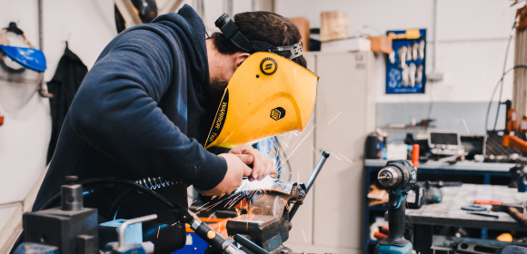
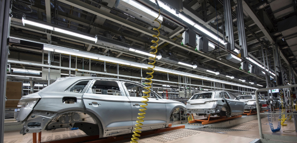

<section class="about offset">
  <div class="container">
    <h2 class="title about__title">О предприятии</h2>
    <div class="about__text grid">
      <p class="about__description">За 20 лет развития в структуре завода сформирован мощный производственный потенциал,
        научно-технический центр, испытательная лаборатория, современная база, учебный центр и широкая сеть региональных
        и международных представительств в Российской Федерации, Республике Беларусь, Узбекистане и Казахстане.</p>
      <p class="about__description">В номенклатуре выпускаемой НПП «ПИОНЕР» продукции найдется все, что необходимо для
        успешного решения задачи автоматизации технологических процессов на любом предприятии. Все средства измерения
        производства «ПИОНЕР» внесены в Государственный реестр СИ и имеют необходимые разрешительные документы.</p>
      <p class="about__description">Ежегодно НПП «ПИОНЕР» реализует несколько проектов по модернизации серийных
        и разработке новых приборов, призванные в наибольшей степени удовлетворять возрастающие требования наших
        заказчиков.</p>
    </div>
    <div class="about__images grid">
      
      
    </div>
  </div>
</section>
